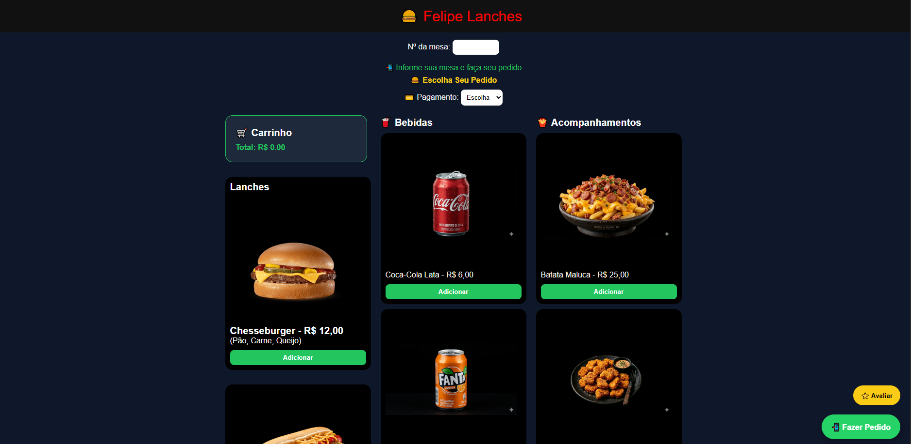
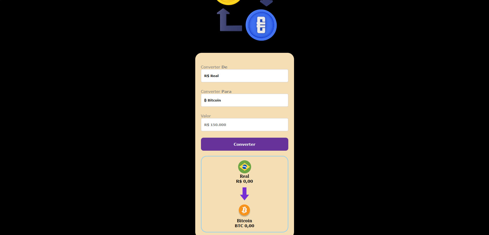
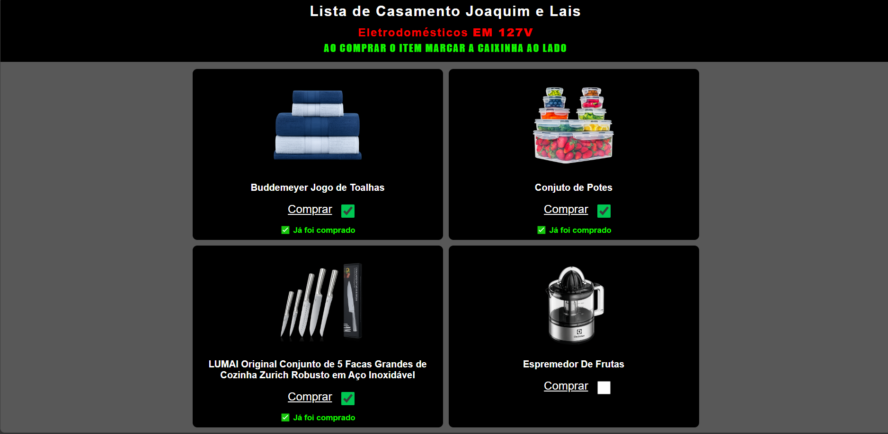
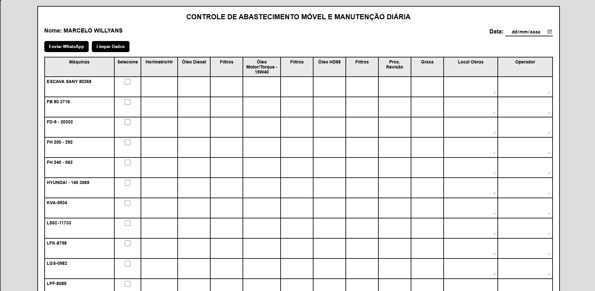
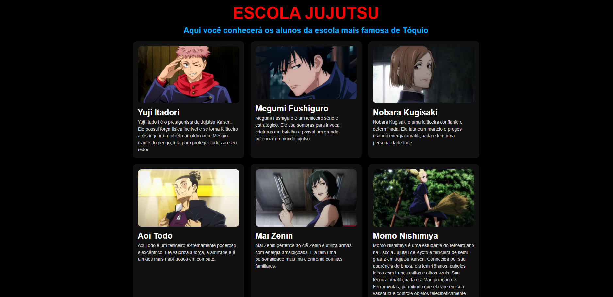

Miguel Mendes
Desenvolvedor Front-End com experiência em HTML, CSS, JavaScript e Firebase. Já desenvolvi projetos para clientes reais, incluindo sistemas de gestão, sites comerciais e aplicações web focadas em resolver problemas de negócios.
HTML • CSS • JavaScript • Firebase • Git • GitHub
Ver Projetos• Desenvolvimento de site comercial para salão de beleza (Freelancer)
• Desenvolvimento de sistema para lista de chá de casa nova com Firebase (Freelancer)

Sistema de cardápio digital para lanchonetes com carrinho de compras, cálculo automático do pedido e integração direta com WhatsApp.
Ver Projeto →Projeto desenvolvido para cliente real, com foco na divulgação de serviços, captação de contatos e agendamento via WhatsApp. Trabalho freelancer entregue e utilizado comercialmente pelo cliente.
Ver Projeto →
Aplicação desenvolvida com HTML, CSS e JavaScript para conversão de valores em Real (BRL) para Dólar, Euro, Libra e Bitcoin, utilizando uma interface simples e responsiva.
Ver Projeto →
Sistema desenvolvido para cliente real utilizando Firebase Firestore para sincronização em tempo real dos presentes selecionados. O projeto foi entregue como trabalho freelancer e utilizado pelos convidados durante o evento.
Ver Projeto →
Sistema web para controle de abastecimento e manutenção de máquinas, com armazenamento automático dos dados no navegador, envio de relatórios via WhatsApp e limpeza de registros com um clique.
Ver Projeto →
Projeto desenvolvido para praticar HTML e CSS, apresentando personagens do anime Jujutsu Kaisen em uma interface organizada por cards com imagens, descrições e categorias.
Ver Projeto →Entre em contato comigo:
WhatsApp